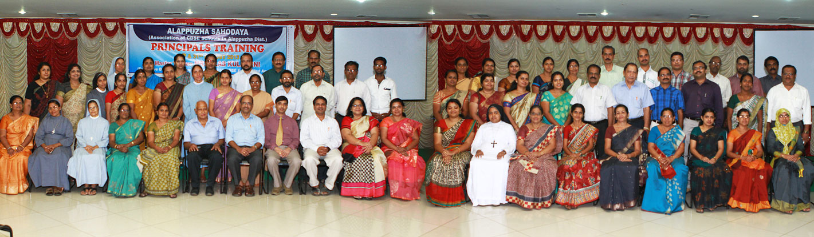

We honour Regional Toppers of AISSCE every year. Personality development progammes and value education and life-skills programme for students and educators are organized from time to time..Executive consisting of President, Vice President, Secretary, Joint Secretary and the Treasurer takes care of the day-today functioning of the Alappuzha Sahodaya.
Sahodaya, is a concept literally meaning ‘rising together’, it came into existence in the year 1986, to facilitate synergy of ideas among the school of CBSE, for excellence in education. Sahodaya School complexes is a group of neighbourhood schools voluntarily coming to share their innovative practices in all aspects of school education including curriculum design, evaluation, and pedagogy and also providing support services for teachers and students.
This concept is developed by the Central Board of Secondary Education (CBSE) New Delhi, the largest governing body of academics with nearly 10,000 schools affiliated to it within the country as well as abroad (118 Schools) functioning under the Ministry of HRD, Govt. of India. It is a unique platform for all CBSE affiliated Schools to share their experience and to work jointly for scholastic and co-scholastic excellence.
In 1987, CBSE brought out a publication titled, “Freedom to learn and freedom to grow through Sahodaya School Complexes” (SSCs) which characterized “SSCs” as a voluntary association of schools in a given area, who through mutual choices, have agreed to come together for a systematic and system-wide renewal of the total educational process. In other words as “Sahodaya” signifies rising together, it identified six areas, to begin with, for collaboration amongst schools of its complex:
1. Educative Management
2. Evaluation
3. Human Resource Mobilization
4. Professional growth of teachers
5. Value oriented school climate
6. Vocationalisation of education.
It is an interactive platform for schools to deliberate upon the different policies and guidelines of the board and provide effective feedback on their implementation to establish new benchmark of qualities. A futuristic vision of schooling needs to embrace various section of society with a view to establish social justice in terms of providing equal opportunities.
It is quite joyous to welcome you all to our site. Your suggestions and creative contributions would be greatly appreciated.
Rajan Joseph K
President